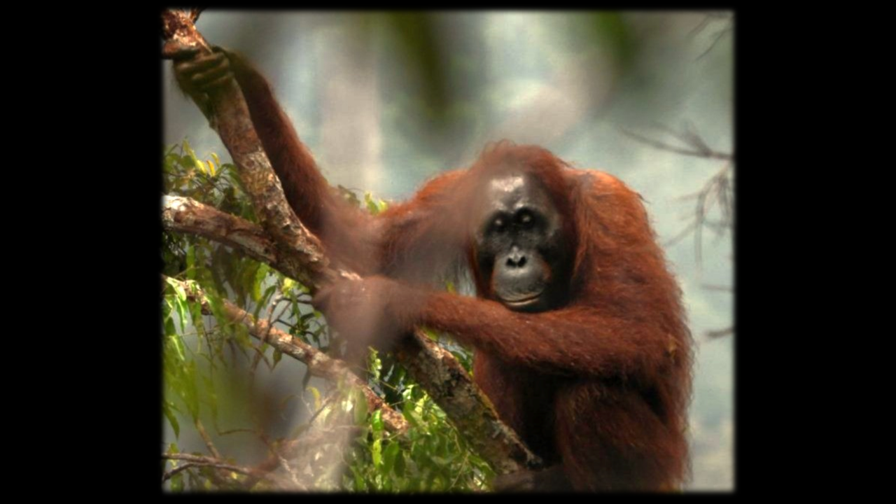
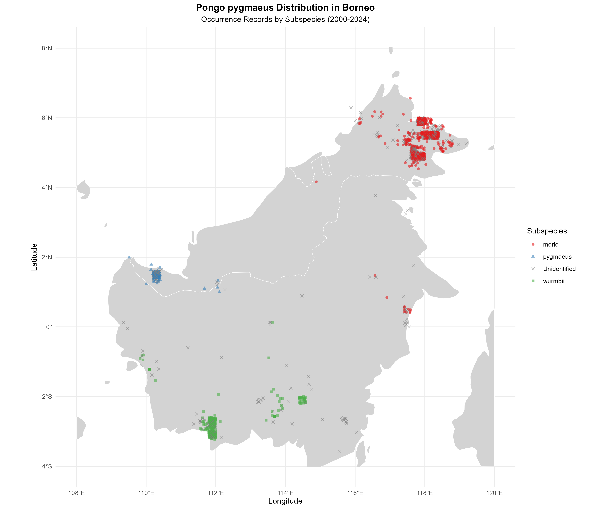

Reproducible Data Science
Transparency • Robust Methods • Open Science
Featured Research Projects
Each project includes full code, data sources, and transparent methods

Orangutan Density Estimation from Nest Surveys
This analysis uses two different R packages to estimate nest density from line-transect distance sampling data. The first package, `Distance`, is used to apply the conventional distance sampling approach, where individual nest detections and their perpendicular distances from the transect line are used to estimate a detection function. The second package, `unmarked`, is used to apply a hierarchical distance sampling approach through `distsamp()`, where detections are grouped into distance intervals for each transect.

Conservation Biogeography of Pongo pygmaeus: A 25-Year GBIF Data Synthesis
This study analyzes 24 years (2000-2024) of occurrence records from the Global Biodiversity Information Facility (GBIF), focusing on Indonesia and Malaysia. 2,176 occurrence records analyzed, 9 unique locations, 58.2% identified to subspecies level.